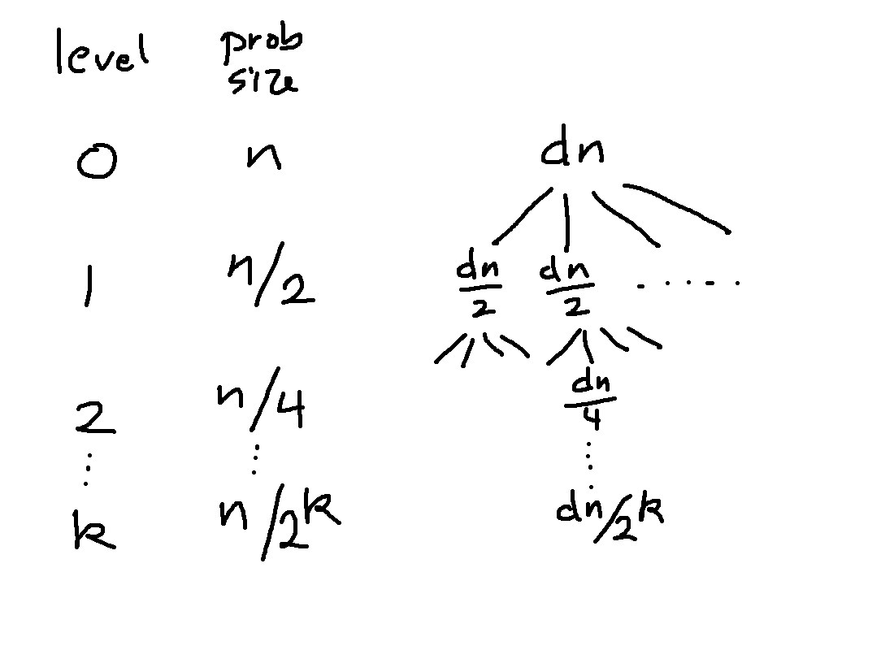

Recursion trees are a method for working out the closed form of a recursive definition. They are particularly useful for the kinds of recursive definitions common in analyzing algorithm running times. Like unrolling, they are slightly fiddly. However, in the context of algorithm analysis, many small errors will turn out not to change the part that matters the most, i.e. the shape of the fastest-growing term. So this turns out to be a good scratchwork technique.
Here's a sample definition:
A(4) = c
A(n) = 4A(n/2) + dn
Let's label the parts of the recursive definition, based on how they determine the structure of the recursion tree:
So, in this case, we'll be building a tree with 4-way branching at each node. At each level, the problem size decreases by a factor of 2. And the leaf level will be when we hit problem size 4.
Other parts of the recursive definition tell us what to put in the nodes of the recursion tree. The "extra work" term covers all the material that is not in the recursive calls. In analyzing an algorithm, this includes work to set up the recursive calls (e.g. divide an array in half) and combine the results returned by the recursive calls. To find our closed form, we add up all this extra work, plus all the work done at the leaf nodes.
So we're going to build a tree with 4-way branching. The top node contains dn, i.e. the extra work at level 0. (Notice that tree levels are numbered starting with 0 at the root.) It is helpful to keep track of the level and the problem size as you draw the tree.
The next level shows the first layer of recursive calls. The problem size is now n/2. Because this extra work term depends on n, it shrinks proportionately to dn/2. (When the extra work term is a constant, it doesn't shrink.)
Build the tree out for another level or two, until you can see the pattern for what it will look like at level k.

Now add the number of nodes at each level:
Now find the sum of all the nodes at each level. In this example, the kth level has \(4^k\) nodes and each contains the value \(\frac{dn}{2^k}\). So the sum at level k is \(4^k\frac{dn}{2^k} = 2^kdn\).
We're going to add up the work at all the levels. But, to do that, we firsr need to figure out what level the leaves are on.
This part works just like it did in unrolling. We take the formula for the problem size at level k (\(\frac{n}{2^k}\)), set it equal to the problem size at the base case (4), and solve for k. So we have \(\frac{n}{2^k} = 4\). So \(n = 2^{k+2}\). So \(k+2 = \log n\). So \(k = \log n - 2\).
It's easiest to solve for the leaf level. We also need the level right above the leaves, i.e. the last level that contains these \(dn/{2^k}\) extra work terms. This is one less than the leaf level, i.e. level \(k = \log n - 3\).
We now need to sum the extra work over all the non-leaf levels. To do this, we add up the level sums, starting at level 0 (the root) and ending right above the leaf level (level \(\log n - 3\)).
\(\displaystyle \sum_{k=0}^{\log n - 3} 2^kdn\)
To simplify this, first move dn out of the summation:
\(\displaystyle dn\sum_{k=0}^{\log n - 3} 2^k\)
Now use the formula for the sum of powers of two: \(\displaystyle \sum_{k=0}^{p} 2^k = 2^{p+1} - 1\). In theory, you all have this memorized. I realize that this memory is still a bit fragile. But you'll end up using this formula a lot in this and later classes.
\(\displaystyle dn\sum_{k=0}^{\log n - 3} 2^k = dn(2^{\log n -2} - 1)\)
Simplifying....
\(\displaystyle dn\sum_{k=0}^{\log n - 3} 2^k = dn(2^{\log n -2} - 1) = dn (\frac{1}{4} 2^{\log n} - 1) = dn (\frac{n}{4} - 1) = \frac{d}{4}n^2 -dn \)
So the sum of everything in the non-leaf nodes is \(\frac{d}{4}n^2 -dn\).
We need to add the work at the leaf nodes. The work at each leaf node is c. How many leaves are there? The number of nodes at level k is \(4^k\) because our branching factor is 4. The leaves are at level \(\log n - 2\)). So the number of leaves is:
\(4^{\log n - 2}\)
To simplify this, we move the -2 out of the exponent:
\(4^{\log n - 2} = \frac{1}{16} 4^{\log n }\)
And then we need to use the change of base formula: \(\log_a n = \log_b n \log_a b\). Actually, because 4 and 2 are closely related, there's another way you can simplify this. I'll use the change of base formula because it works on a wider range of examples:
\(4^{\log n - 2} = \frac{1}{16} 4^{\log n } = \frac{1}{16} 4^{\log_4 n \log_2 4 } = \frac{1}{16} (4^{\log_4 n})^{\log_2 4} = \frac{1}{16} n^{\log_2 4} = \frac{1}{16} n^2 \)
So \(\frac{1}{16} n^2\) leaves, with c work at each leaf, means that the total work at the leaves is \(\frac{c}{16} n^2\).
Looking back up above, the work at the non-leaf levels was \(\frac{d}{4}n^2 -dn\). So the total work in our recursion tree is \(\frac{d}{4}n^2 -dn + \frac{c}{16} n^2\). Collecting terms, we get our final closed form:
\((\frac{d}{4} + \frac{c}{16}) n^2 -dn \)
This is an exact closed form. When we do algorithm analysis, we won't care about the constants or the low-order term. Our bottom line will be that the dominant term is in \(n^2\).